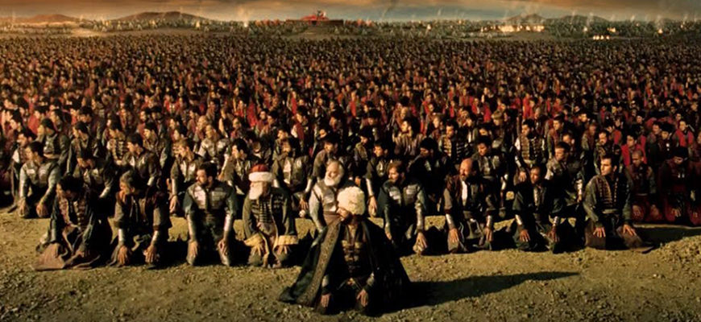

عزيزي القارئ هذه المعلومات من مصادر موثوفة وأخذناها من كتاب حقبة من التاريخ للكاتب عثمان بن محمد الخميس ننصحكم بعدم زيارة أي موقع إلا بالتحقق من مصدر المعلومات اللتي قدمها
كتاب حقبة من التاريخ هو كتاب للكاتب عثمان بن محمد الخميس يحكي فيه عن الفترة ما بين موت سيدنا محمد حتى مقتل الحسن بن علي بن ابي طالب ويحكي بالتفصيل عن قيام اول دولة اسلامية وهي الخلافة الراشدة التي أسسها سيدنا محمد والصحابة الكرام وهو كتاب مهم جدا معرفة كيف تم تأسيس الدولة الاسلامية والتي صارعت أكبر الامبراطوريات آنذاك وهي الامبراطورية البيزنطية
الخلفاء : سيدنا محمد و ابو بكر و عثمان ابن عفان و عمر بن الخطاب و علي بن ابي طالب وأخيرا الحسن بن علي بن ابي طالب
632 – 661 عصر الخلفاء الراشدين • 632 - 634 خلافة " أبو بكر الصديق" رضي الله عنه، جيوش المسلمين تحكم سيطرتها على شبه الجزيرة العربية وتبدأ فى الزحف خارجها • 632 أبو بكر يرسل جيشا بقيادة أسامة بن زيد إلى جنوب الشام لتأديب القبائل المتمردة هناك • 633 حروب الردة: أبو بكر يقضي على الفتن فى شبه الجزيرة العربية، فيرسل الجيوش لقتال مانعي الزكاة والمرتدين • 633 معركة اليمامة (منطقة في الجانب الشرقي لشبه الجزيرة العربية): خالد بن الوليد يقضي على المرتدين أتباع "مسيلمة الكذاب" • 634 خالد بن الوليد يستولى على "الحيرة" بالعراق عاصمة "العرب المناذرة" أتباع الامبراطورية الفارسية، أبو بكر يسير أربعة جيوش إلى حمص ودمشق والأردن وفلسطين لقتال الروم. • 634 معركة أجنادين: خالد بن الوليد (قادما من العراق) يهزم الروم فى "أجنادين" فى سورية • 634 الجمع الأول للقرآن الكريم: عمر بن الخطاب ينصح أبا بكر بضرورة جمع القرآن في مصحف واحد، بعد استشهاد كثير من المسلمين من حفظة القرآن، بعد وفاة أبي بكر المصحف ينتقل إلى عمر بن الخطاب ثم إلى ابنته "حفصة" ثم إلى عثمان بن عفان. • 634 وفاة أبي بكر الصديق • 634-644 خلافة عمر بن الخطاب رضى الله عنه، بترشيح من أبي بكر • 634 القوات الإسلامية تتوغل في الإمبراطوريتين الفارسية والبيزنطية • 635 الحرب مع الفرس: معركة "الجسر": المسلمون بقيادة أبي عبيد بن مسعود ينهزمون أمام الفرس، معركة "نهر البويب": المسلمون بقيادة "المثنى بن حارثة" ينتصرون على الفرس • 636 موقعة وادي اليرموك: اللقاء الفاصل بين المسلمين والروم، خالد بن الوليد يهزم الروم بقيادة الإمبراطور "هرقل في سورية، الروم يرحلون من بلاد الشام إلى الأبد. • 637 موقعة القادسية (بالعراق): سعد بن أبى وقاص يهزم الفرس ويستولي على العراق وشرق فارس ويفتح "المدائن" عاصمة الإمبراطورية الفارسية • 638 القدس تحت الحكم الروماني تستسلم لعمر بن الخطاب بعد حصار الجيوش الإسلامية لها، عمر يعطي أهلها وثيقة الأمان (العهد العمري) • 640 عمرو بن العاص يبدأ فتح مصر وينشأ مدينة "الفسطاط" كأول عاصمة إسلامية لمصر • 640 العرب المسلمون ينشأون مدينتي "البصرة" و"الكوفة" بالعراق كحاميتين إسلاميتين • 641 موقعة نهاوند: "النعمان بن المقرن" يهزم الفرس هزيمة نهائية ويفتح فارس كلها • 642 عمرو بن العاص يستولى على الأسكندرية، ويطرد الروم من مصر نهائيا • 642 العرب المسلمون يحكمون فارس والعراق والشام ومصر ويتوغلون في الشمال الأفريقي • 644 اغتيال عمر بن الخطاب على يد العبد الفارسي "أبي لؤلؤة" الملقب بــ"المجوسي" • 644 - 656 خلافة عثمان بن عفان رضي الله، الذي اختاره المسلمون من بين ستة رجال رشحهم عمر قبيل وفاته • 644 عثمان بن عفان يكتب إلى الولاة وقادة الجند في الأمصار بالإرشادات والنصائح في حكم الناس • 644 – 651 عثمان يسير الجيوش لقمع الردة الفارسية بعد وفاة عمر بن الخطاب • 644 "معاوية بن أبي سفيان" والي الشام يبدأ في إنشاء الأسطول الإسلامي • 645 عمرو بن العاص يعود من جديد ليهزم الروم الذين استولوا على الأسكندرية طمعا في العودة إلى مصر • 647 "عبد الله بن سعد" والي مصر يصل إلى مدينة "قرطاجنة" عاصمة "تونس"، وينتصر على الرومان هناك • 648 الأسطول الإسلامي بقيادة معاوية بن أبي سفيان والي الشام وعبد الله بن سعد والي مصر يفتح جزيرة "قبرص"، التي كانت تتبع الإمبراطورية البيزنطية • 651 عبد الله بن سعد يفتح بلاد النوبة • 653 معاوية بن أبي سفيان يعاود غزو جزيرة قبرص بعد تمرد سكانها، ويضمها نهائيا إلى دولة الخلافة • 653 عثمان ينشأ المصحف الموحد (مصحف عثمان)، حلا لإشكالية قراءة القرآن الكريم بعدة قراءات مختلفة،ويرسل نسخة منه إلى كل إقليم • 654 معركة "ذات الصواري": الأسطولان المصري والشامي بقيادة والي مصر عبد الله بن سغد يهزمان الأسطول الروماني شرقي البحر المتوسط، سميت المعركة بــ"ذات الصواري" لكثرة عدد السفن التي اشتركت في المعركة من الجانبين • 655 عثمان يرسل أربعة من الصحابة إلى الكوفة والبصرة والشام ومصر للتحقيق في الشكاوى الصادرة ضد ولاة هذه الأقاليم من أقاربه • 656 اغتيال عثمان بن عفان في المدينة على أيدي زعماء الئائرين من أهل البصرة والكوفة ومصر • 656 - 661 خلافة علي بن أبي طالب رضى الله عنه، بإلحاح من الصحابة • 656 الصحابة يطلبون من علي القصاص من قتلة عثمان، علي يعزل ولاة الأقاليم من أقارب عثمان، معاوية والي الشام يرفض العزل ويرفض مبايعة علي إلا بعد قصاصه من قتلة عثمان • 656 علي يكلف "أبا الأسود الدؤلي" بوضع قواعد علم النحو خوفا من فساد اللغة العربية بعد اتساع الدولة الإسلامية • 656 موقعة الجمل (في البصرة): بين علي والمطالبين بدم عثمان، بقيادة السيدة عائشة وطلحة والزبير، مقتل 20 ألف مسلم، بداية الحرب الأهلية بين المسلمين • 657 موقعة صفين: بين علي ومعاوية، مقتل 75 ألف مسلم من الجانبين، جيش معاوية يرفع المصاحف للاحتكام بها، اللجوء إلى التحكيم • 658 أنصار علي ينقسمون إلى "شيعة" مؤيدين لعلي، و"خوارج" متمردين عليه • 659 معركة النهروان (بالقرب من الكوفة): علي يهزم الخوارج • 660 الاتفاق بين علي ومعاوية: لعلي العراق وبلاد فارس، ولمعاوية الشام ومصر • 661 اغتيال علي بن أبي طالب رضى الله عنه بيد "عبد الرحمن بن ملجم" أحد الخوارج • 661 عام الجماعة: خلافة الحسن بن علي، وتنازله عن الخلافة لمعاوية بن أبي سفيان حقنا لدماء المسلمين، إنتهاء عصر الخلافة وقيام الدولة الأموية 661 – 750)